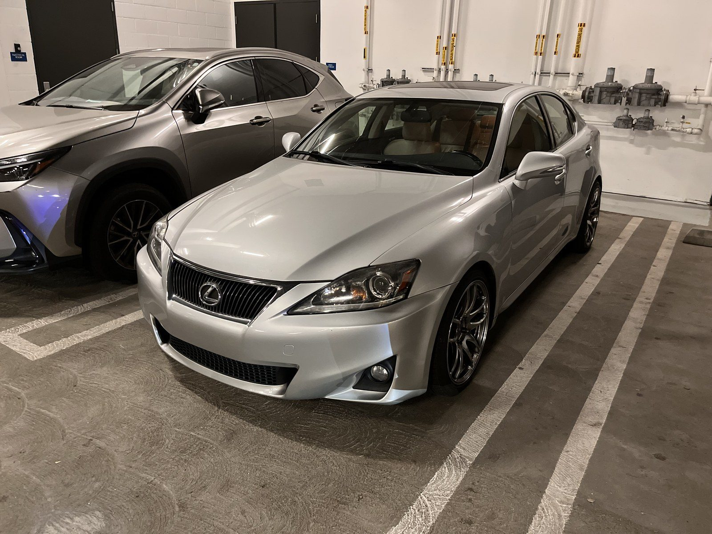

car.kiv
car.kiv
Inari
2013 Lexus IS250 · daily driver · always a work in progress
Intro
My 2013 Lexus IS250, whom I lovingly refer to as "Inari," after the fox goddess in Japanese mythology.
She was the first car I purchased entirely with my own money, as my previous car was a hand-me-down that had gone through five different people in my family. My 2007 Toyota Corolla.
Initially, I wanted the 2005 IS300. I had a friend with the GS300 and I fell in love with the sound of the 2JZ.
Well, in 2024, the market for the IS300 wasn't the best. And the IS250 market wasn't great either. I looked at so many cars. I decided then, that my priority, since this would be my only vehicle, was to find an example that was well-maintained.
When Kris, the previous president of Lancer Motorsports and former Mercedes auto-tech, and I test-drove what would later become Inari... we both finally thought, "this is it."

After that, well... you'll find bits and pieces of it here. :)
- Car2013 Lexus IS250
- NicknameInari
- RoleDaily driver (and my only car)
Chassis Tuning
Where I learned the most
Suspension
Shocks, links, control arms and bushings: what I've changed, when, and what's next.
Wheels & Tires
Wheel and tire choices, and how they changed the way she drives.
Brakes
Pads, lines, and what I'd do differently.
Differential
Why I picked up a Torsen diff.
Maintenance & Cooling
Keeping her aliveCooling System Refresh
OEM radiator, hoses, and everything that came with them.
Service History
Oil, fluids, filters, and mileage, kept honest.